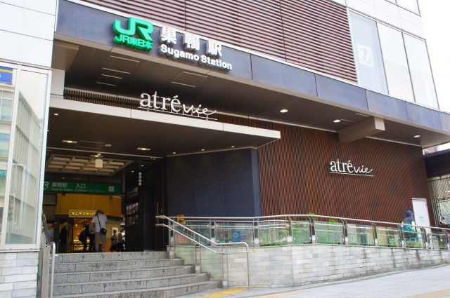

LOCATION
周辺環境

巣鴨駅（徒歩15分）
都心の利便性と落ち着いた暮らしが叶う快適なロケーション。
現地は池袋まで電車で2駅、自転車でも行ける便利な立地にあります。
一方で、都市の主要エリアからはほどよく離れており、都心にありながら落ち着いた暮らしが実現できます。
現地に隣接する約2.2ヘクタールの「北区立西の原みんなの公園」は、子どもが遊んだり散歩するのに最適で、緑豊かな潤いのある生活が楽しめます。
また、現地周辺にはスーパーマーケットや医療施設など、生活に必要な施設が揃っており、シングルの方から子育てファミリーまで、どの世代の方にも快適なロケーションです。
-

北区立西の原みんなの公園（現地隣接）
-
飛鳥山公園（徒歩13分）
-

アトレヴィ巣鴨（徒歩19分）
-
巣鴨地蔵通商店街（徒歩17分）
-
Season mart（徒歩6分）
※写真はイメージです。 -
クリエイトＳ・Ｄ 北区西ヶ原店（現地1F）
※写真はイメージです -
旧古河庭園（徒歩18分）
-
六義園（徒歩27分）
LIFE INFORMATION
-
-
ショッピング施設
- Season mart
- 6分
- まいばすけっと 巣鴨５丁目店
- 9分
- まいばすけっと西ヶ原3丁目店
- 12分
- スーパーみらべる 西巣鴨店
- 14分
- 肉のハナマサ 巣鴨店
- 16分
- 西友巣鴨店
- 19分
- 成城石井 アトレヴィ巣鴨店
- 21分
- クリエイトＳ・Ｄ 北区西ヶ原店
- 現地1F
- 巣鴨地蔵通商店街
- 21分
-
教育施設
- 西ケ原南保育園
- 1分
- 西ケ原保育園
- 5分
- 駒込第一保育園
- 7分
- おうち保育園すがも
- 8分
- 西ケ原東保育園
- 11分
- 樫の木幼稚園
- 3分
- 飛鳥すみれ幼稚園
- 9分
- もみじ幼稚園
- 14分
- 北区立西ケ原小学校
- 3分
- 北区立飛鳥中学校
- 12分
-
-
-
医療機関
- アスカクリニック
- 6分
- 富士病院
- 6分
- あおぞらクリニック
- 7分
- 青木内科クリニック
- 13分
- 巣鴨医院
- 15分
- 巣鴨クリニック
- 19分
- 巣鴨ホームクリニック
- 23分
- 花と森の東京病院
- 15分
-
その他
- 北区立西の原みんなの公園
- 現地隣接
- 飛鳥山公園
- 13分
- 滝野川警察署 滝野川一丁目交番
- 5分
- 北区立滝野川西図書館
- 16分
- 北区役所 滝野川分庁舎
- 16分
-